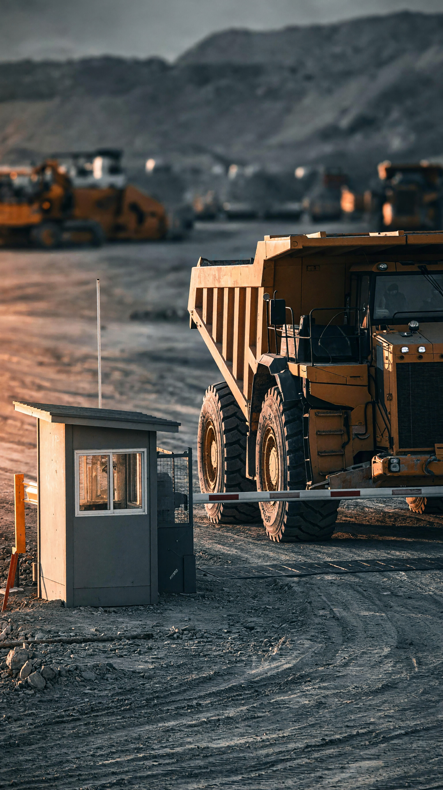
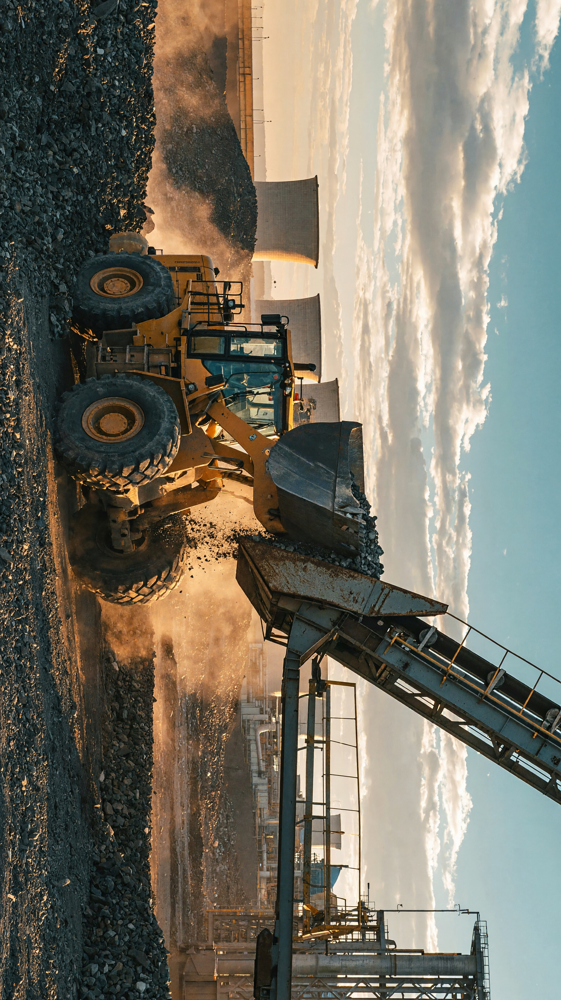

Cada tarea en su pantalla
Un módulo por responsabilidad: vigilancia, balanza, laboratorio, comercial y contabilidad. Sin menús de veinte opciones.
Programación, recepción, balanza, guías, leyes, valorización, blending, despachos y contabilidad. La operación completa de compra y venta de mineral, sin cuadernos y sin cruces manuales.
Comprar y vender mineral no es solo mover camiones. Es que cada peso, cada guía y cada ley quede registrada en el mismo lugar, para que la compra, el despacho y la factura cierren sin discusiones.
procesos del ciclo de mineral, de la entrada a la factura
etapas de control: recepción, valorización, despacho y contabilidad
base de datos compartida entre comercial, planta y contabilidad
Un módulo por responsabilidad: vigilancia, balanza, laboratorio, comercial y contabilidad. Sin menús de veinte opciones.
El lote, su guía, su ley, su valor y su comprobante quedan enlazados. Se sigue el mineral sin reconstruir la historia.
Pesos, leyes y anticipos se registran como los usa la planta: por unidad, por lote y por parte.

La llegada se programa, vigilancia registra el ingreso y la balanza pesa cada unidad con tara, bruto y neto.
El lote se valida y se distribuye en partes, con su vehículo y su guía. Las leyes se cierran y se acuerdan.

La compra se valoriza en oro y plata con las leyes acordadas. El blending arma la mezcla que el cliente pide.
Se programa el envío, se registra la valorización del cliente y se cierran los comprobantes con sus anticipos.
Doce etapas, un solo sistema. Cada una queda registrada y alimentando la siguiente.
Mira cómo se registran los datos en pantalla y cómo queda resuelta cada situación del día a día.
Diseño y arquitectura de plataformas web, móviles y empresariales adaptadas exactamente a los flujos de tu negocio.
Lectura automática del peso desde la máquina de balanza, con digitación manual como alternativa cuando el equipo no está conectado.
Acompañamos a tu empresa del papel y las hojas de cálculo hacia una base centralizada, capacitando a vigilancia, balanza, laboratorio y administración. Sin traumas en la transición.
Coordinamos una demostración del ERP COMERCIAL con tu propio caso: proveedor, lote, balanza y despacho. Directo al grano.